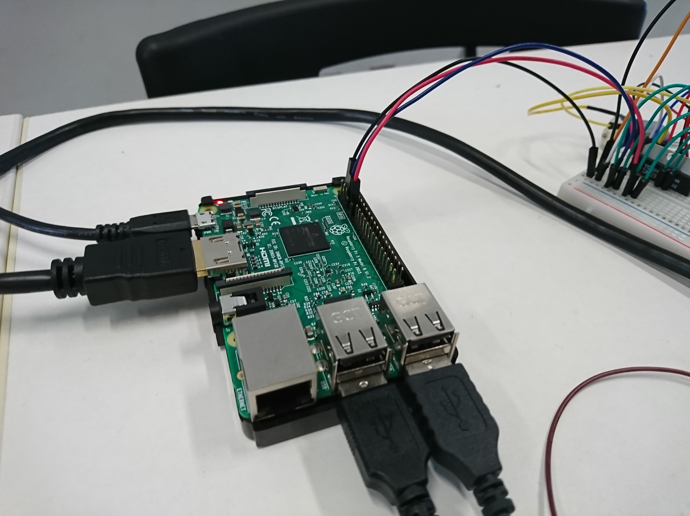
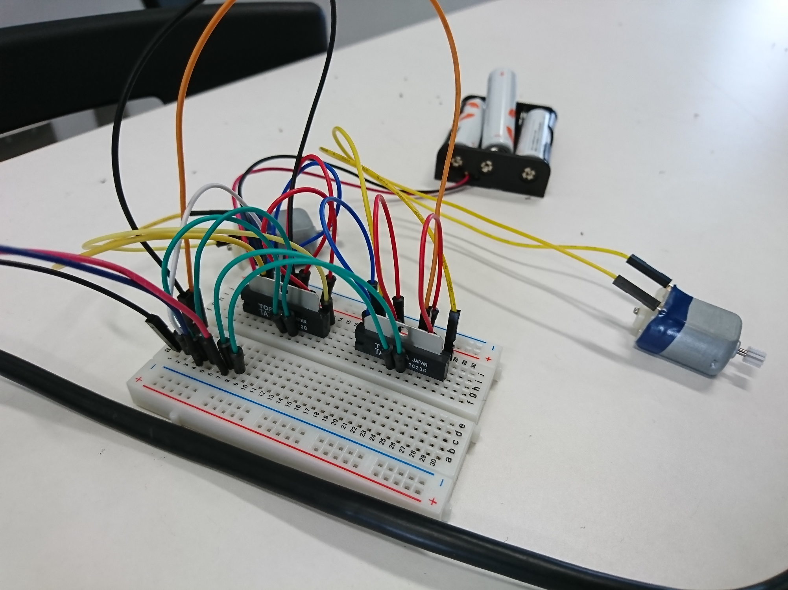
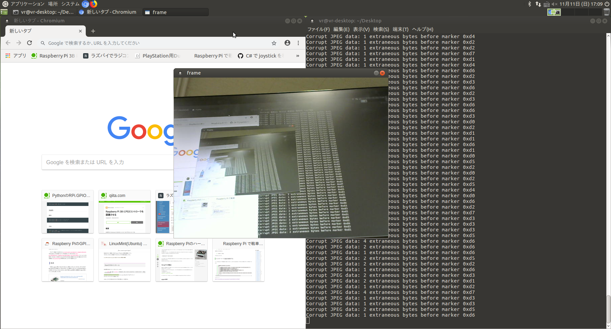

概要
私たちは、車体についているカメラの映像をVR化し、その映像を見ながらよりリアルな感覚で車体を操縦できるものを目指しました。
このアクティビティに取り組むことで、回路・マイコン・プログラムの書き方や構造を自分一人で出来る力が得られます。
仕組み

使用したもの
- Raspberry Pi：シングルボードコンピュータ
- Python：プログラミング言語
- PWM：Pythonのモジュール
- pigpio：汎用入出力端子
PWMとは…。
PWMとは「Pulse Width Modulation」の略で、半導体を使った電力を制御する方式の1つ。
オンとオフの繰り返しスイッチングを行い、出力される電力を制御します。
PWMは、優れた制御性と、高効率 が特長で、インバータ回路 で広く使われている技術です。ブラシ付きDCモータの回転制御にも使われています。
製作過程
① Play station のコントローラーの信号受信
機体を操縦するために、Play stationのコントローラーを使用しました。
初めにコントローラーからの信号を受信し、その中から今回の活動に必要な信号だけを抽出しました。
② Python で信号毎のプログラミング
①で抽出したコントローラーの信号から、それぞれの信号からの操作をPython を用いてプログラミングしました。
③ 回路の作成
MD（モータードライバ）を用いて、DCモータの制御を行う回路を作製しました。
作成後、コントローラーを操作しても操縦できない現象が発生しました。
トルクの不足が原因だとわかったので、ギア比を増やし解決させた。
制作過程でのトラブル
- 完成したがトルクが足りず動かなかった。
- 電源に困った。
- 同時にモータを動かせなかった。
習得した知識・技術

- ロボットを造るのに必要な基礎知識を得ました。
（プログラミング、制御やモーターの使い方など。） - DCモータを使った機構を持つ、機体の制作。
プログラミング・制御やモータの使い方など。 - Pythonを用いた「Play station」コントローラーの信号受信の方法
- Play station コントローラーの信号受信の方法
- PWMの仕組み
- シングルボードコンピュータの組み込み
今後の活動
実際の動き
コントローラーを操縦して実際に実機が動いている様子です。